Overview
We implemented ways to rasterize triangles onto a screen, using different methods. We also included several techniques to make the rendered image look better/get rid of aliasing artifacts. We also implemented pixel and level sampling methods. It was interesting to learn about the various ways how textures are rendered onto a screen.
Section I: Rasterization
Part 1: Rasterizing single-color triangles
To rasterize a triangle, We first find the bounding box of the triangle by taking the maximum and minimum x and y values of the vertices. Then we check the winding order of the vertices. We do this by defining function L0(x, y) (as defined in lecture), using the first two vertices (x0, y0) and (x1, y1). Then, using the last vertex (x2, y2), if L0(x2, y2) is negative, then the winding order is clockwise. If the winding is clockwise, we swap the values of the points (x1, y1) and (x2, y2), forcing the efffective winding order to be counterclockwise. We proceed afterward assuming that the winding order is counterclockwise. Finally, we go through every pixel in the bounding box and fill the pixel with the color if pixel (sampled in the center) is inside the triangle. The sample is inside if L0, L1, and L2 all evaluate as nonnegative. We define the functions L0, L1, and L2 using pairs of vertices just as in lecture.
My algorithm is no worse than checking each sample in the bounding box of the triangle because I am doing exactly that. My algorithm checks each sample in the bounding box.
Here's a screenshot of basic/test4.svg working. It is zoomed on a jaggy on the red triangle.
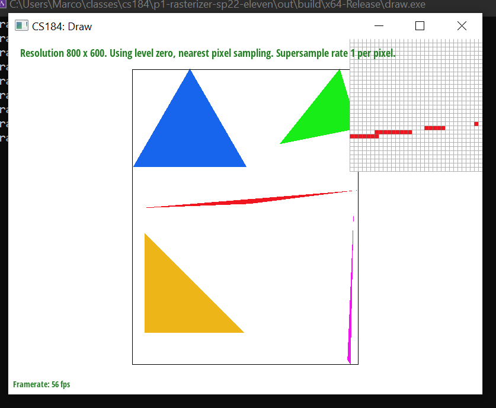Part 2: Antialiasing triangles
We used the Part 1 code as a starting point. In rasterize_triangle,
for every pixel in the bounding box, we check every supersample within that pixel,
and fill in the color into the sample buffer if that supersample is in the triangle.
Once the sample buffer is filled in this fashion, for each framebuffer pixel, we
take the average color of the coresponding supersamples, and fill in the color of
the framebuffer pixel with that average. This process of resolving the sample buffer
colors to the framebuffer is done in resolve_to_framebuffer.
As for data structures modified, it mostly had to do with
RasterizerImp::sample_buffer.
We changed this sample buffer to have dimensions that depend on the
sample_rate. We changed the size of this sample buffer to be
width * height * sample_rate, so there is one entry for each
supersample, where width and height are the dimensions
of the bounding box.
Supersampling is useful in order to get rid of aliasing in the rendered image. An example of an aliasing artifacts that can be fixed by supersampling are staircase patterns/jaggies that emerge when trying to render a diagonal edge of the triangle.
Below compares different supersampling rates. As we increase the supersampling rate, we see that this triangle corner appears smoother. This happens because, as we increase the sampling rate, we can come closer to the approximating the continuous traingle that we are attempting to rasterize.
|
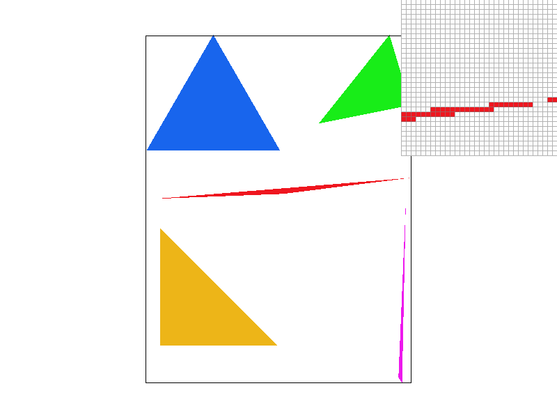
|
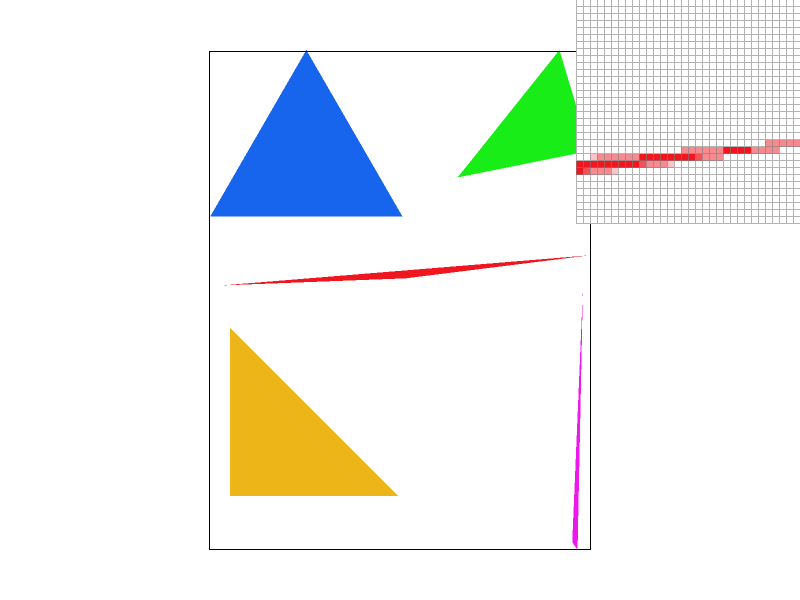
|
|
|
|
Part 3: Transforms
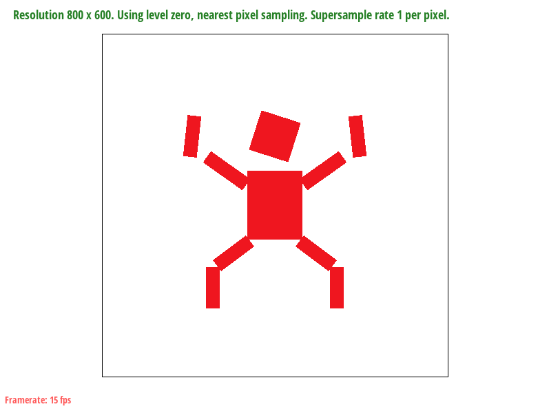Here is cubeman doing a victory pose with his arms held high and feet wide. His torso was scaled in the x-direction to be slimmer. The left and right arms and legs are symmetrical, and his thighs are rotated outward from his torso. His arms are rotated and brought up. Adjustments were made to the positions of the arms and legs so they were close to the torso.
Section II: Sampling
Part 4: Barycentric coordinates
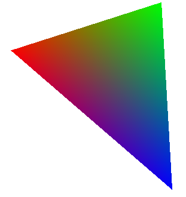Barycentric coordinates can be understood as defining a point using the weights ("masses") at the vertices, such that the point is located at the "center of mass." For a triangle with red, green, blue as values on the vertices, the color of a point is given as a combination of RGB, weighted to satisfy the "center of mass". When the weight on blue is heavy, then the "center of mass" must be close to this heavy mass and thus the color value given is close to blue. This has the effect of linearly interpolating the values at the vertices.
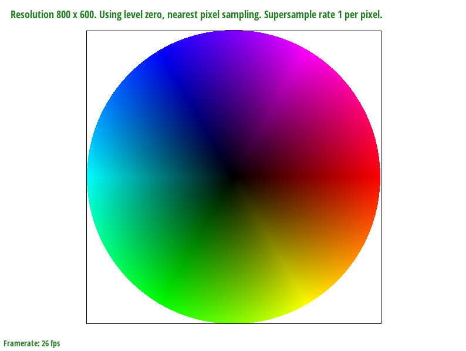Part 5: "Pixel sampling" for texture mapping
In pixel sampling, we have a grid of pixels which are indexed using discrete values
and a sample point, which can have coordinates that lie in between the
discrete-valued pixel indices. Pixel sampling determines how we assign a value to
our sample point, given that we know its location on the grid of pixels. In the
context of texture mapping, for any pixel in our original triangle, we can use
barycentric interpolation to find its corresponding coordinates in texture space.
Once our point is in texture space, we apply pixel sampling to assign a
Color to our point.
In the nearest pixel sampling method, we find the texel that is closest to our sample point in texture space, and assign the color of that texel to our sample point. In the bilinear pixel sampling method, we take a look at the four closest texels to our sample point. We perform linear interpolation in both the x and y directions, and we assign a weighted sum of each of the 4 colors to our sample.
Below compares the nearest and bilinear pixel sampling methods at supersampling rates of 1 and 16. At both supersampling rates, we see that the nearest pixel sampling method results in a more blocky looking red dotted line, which is zoomed in on by the pixel inspector. The bilinear method generally works better at places where the color changes drastically quickly such that the nearest method results in a "sharper" or more "blocky" image, while the bilnear result looks smoother.

|
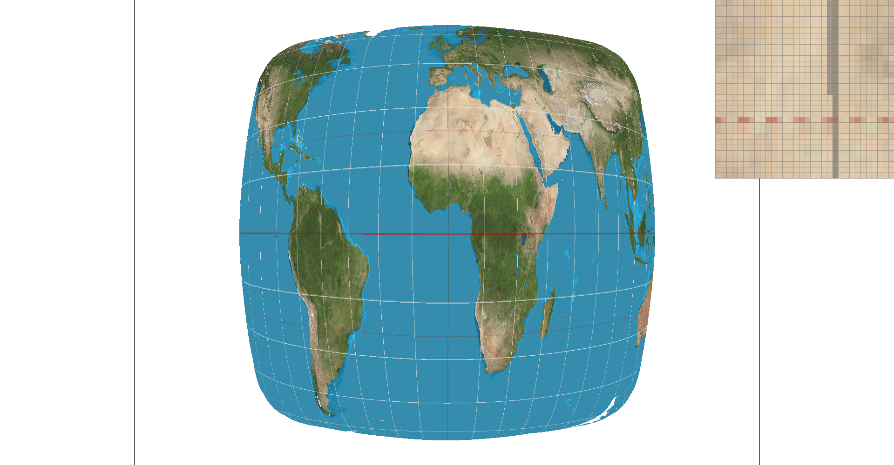
|
|
|
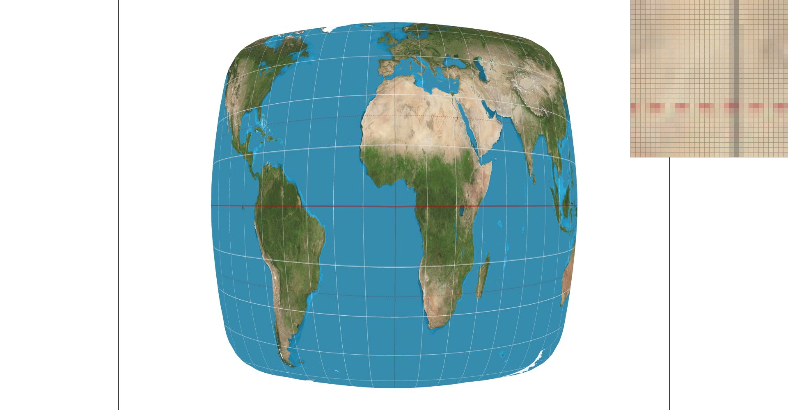
|
Part 6: "Level sampling" with mipmaps for texture mapping
When creating an image using textures, textures are often mapped to different parts of an images over different surface areas. Aliasing occurs when high resolution textures are mapped to small areas of an image. Level sampling is a way to choose an appropriate resolution texture, or mipmap, to map to an image. The different resolutions of the mipmap are called levels, with the zeroth level as the full resolution texture.
The level can be determined by a Jacobian, which describes the area covered by the texture in the screen space. In the code, this is estimated using the difference in texture coordinates for neighboring screen samples. In nearest level sampling, the level estimate is rounded and the mipmap at the rounded level is sampled for texture mapping. In linear level sampling, the two nearest mipmap levels are sampled, then the colors are linearly interpolated to give the color at the level estimate.
|
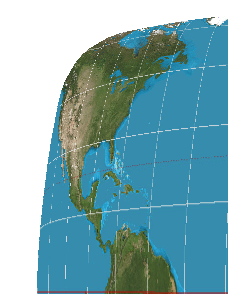
|
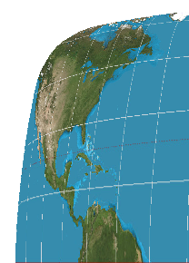
|
|
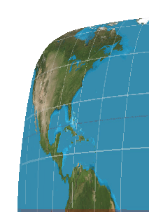
|
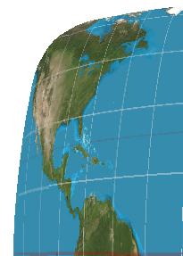
|
Four images of North America are shown for 1 sample per pixel. Nearest level sampling (bottom two) recognizes that the West Coast is being mapped onto a small area of the screen, and so uses a higher level mipmap than the full resolution texture, used by the top two images. This causes the blur of the West Coast in the level sampled images that looks better than the aliasing of the non level sampled images. Meanwhile, the Gulf of Mexico is not as changed, as it is not distorted much.
We used supersampling, pixel sampling, and level sampling in rasterization.
Supersampling can get rid of jaggies and render edges well. However, this has the drawback of rapidly increasing memory requirements to store the sample_buffer matrix, as well as requiring many more computations as the color must be computed for each entry of the matrix which must then be downsampled, slowing down rendering.
Pixel sampling allows us to fill parts of the image with textures in the appropriate proportions. Textures can be referenced in multiple places, lowering the required memory. Computations are required to sample the color in the texture, but only scales linearly with number of samples, unlike supersampling where increasing sample rate scales quadratically. However, aliasing is present where high resolution textures are minimized and mapped into a small area.
Level sampling gets rid of the aliasing from mapping textures. This blurs out small areas of the image where the texture is mapped. However, many mipmap levels need to be stored for the same texture, increasing the memory usage. Some additional calculations are added to pixel sampling to figure out the appropriate level, however, this does not affect the speed much.
Github pages link:
https://cal-cs184-student.github.io/sp22-project-webpages-marcogelle/proj1/index.html